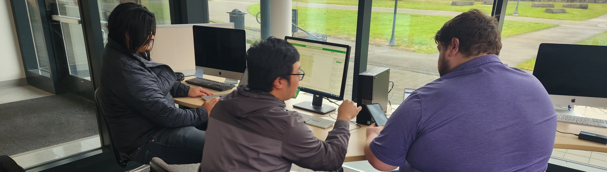

Here's What You Need to Know
The Digital Technology and Culture program was started at WSU Vancouver. The program is one of five signature programs on the Vancouver campus. It integrates research and teaching in an intellectually-diverse, technologically innovative experience, applying inter-and transdisciplinary approaches that foster civic engagement from local-to-global contexts in the areas of Digital Humanities, media art, media communication, media studies, information systems.
The program offers six specialties that include Game Studies & Design; Web & Mobile Design & Development; 2 & 3D Animation for Simulation & Visualization; Digital Publishing; Physical Computing; & Social Media / SEO.
Sitting at the intersection of art, technology and the humanities the CMDC program provides a well-rounded education in culture as well as technology.
In the DTC program you’ll focus on the relationship between technology and humanity, integrating critical thinking, creativity and computing skills with coursework in the arts, humanities, social sciences, management information systems and computer science.
The broad-based, interdisciplinary DTC degree prepares you for a culturally diverse, technologically complex 21st century.
Tools
Modern digital professionals use a variety of tools to accomplish their work and are constantly learning new ones! Here are a few of the most prominent that you will use in the program, but this is by no means an exhaustive list.
Sublime Text - https://www.sublimetext.com/
Sublime Text is a text editor that you’ll use frequently throughout your time in the DTC program. It is where you’ll learn to use HTML, CSS, and JavaScript. If your goal is to be a web developer, this is the tool you’ll use the most.
Adobe Creative Suite - https://www.adobe.com/creativecloud.html
As design is a large part of the major, the Adobe Creative Cloud is a place where you’ll spend a lot of your time. Programs such as Photoshop, Illustrator, Premiere, After Effects, and XD will be used in various classes and projects along your journey.
Unreal Engine/Twine - https://www.unrealengine.com , https://twinery.org/
In certain game development classes you will be exposed to certain engines in order to create and modify games. As a game designer and developer, these engines will provide the basis of your knowledge in the gaming industry.
Basecamp - https://basecamp.com/
Basecamp is where you can submit and check out other students' work. It's a collaborative tool that is similar to Canvas that the DTC program uses exclusively.
Slack - https://slack.com/
Slack is where you’ll communicate to your professors and fellow students. Slack is useful for splitting students into smaller groups and creating a chat channel of group activities. It’s also a great way to see what's happening within the DTC program.
Blender - https://www.blender.org/
Blender is a free and open-source 3D computer graphics software tool set used for creating animated films, visual effects, art, 3D-printed models, motion graphics, interactive 3D applications, virtual reality, and, formerly, video games.
Maya - https://www.autodesk.com
Maya is also used for 3D animation. It is used to create assets for interactive 3D applications, animated films, TV series, and visual effects. You would use this program if you’re interested in animation.
VMMC 111 has computers equipped with the Adobe Creative Suite, Maya, Unity, Unreal Engine, Blender, and other software. The classroom is an open lab for students to use outside of the class hours that are posted on the door outside.
DTC Specialty Road Maps
The DTC degree can be tailored to many specialties, here a few paths through the program that have been customized for specific interests and skills.
Web / App Production & Development
Plans and codes websites that are both intuitive and insightful; plans and develops strategies for navigation; establishes links between collections of information in order to promote their effective utilization by users
DTC 336 Design and Composition
DTC 355 Multimedia Authoring
DTC 477 Advanced Multimedia Authoring
DTC 478 Usability and Interface Design
DTC 492 Engines & Platforms
+ MIS or CS courses that offer background in programming and coding
Public Relations and Digital Marketing
Creates and distributes information for placing the best context around a situation or company; creates and administers efforts to present products/ services in online contexts, particularly around considerations associated with eCommerce.
DTC 336 Design and Composition
DTC 355 Multimedia Authoring
DTC 338 Special Topics: Video
DTC 208 Introduction to Digital Cinema and/or DTC 491 Digital Cinema
DTC 330 Social Media Case Studies and/or DTC 331 Social Media Practices
+ Professional Writing Certificate (ENGL)
+ Marketing minor
Social Media Coordinator / SEO Specialist
Oversees the policy for and development of social media for businesses and organizations; strategizes organization's web presence.
DTC 336 Design and Composition
DTC 330 Social Media Case Studies
DTC 331 Social Media Practices
DTC 355 Multimedia Authoring
DTC 356 Information Structures
+ Professional Writing Certificate (ENGL)
+ Marketing minor
Content Specialist / Strategist
Designs and implements interfaces for online spaces; develops philosophy and methodology of communication; creates plans for development/creation of content and guidelines of voice and style; facilitates usability functions for style, voice, and content.
DTC 335 Digital Animation
DTC 336 Design and Composition
DTC 355 Multimedia Authoring
DTC 208 Introduction to Digital Cinema and/or DTC 491 Digital Cinema
+ Other DTC courses in creating media objects (video, websites, sound production, digital music, etc.)
+ Professional Writing Certificate (ENGL)
Media Communication Specialist
Designs and implements interfaces for online spaces; develops philosophy and methodology of communication; creates plans for development/creation of content and guidelines of voice and style; facilitates usability functions for style, voice, and content.
DTC 330 Social Media Case Studies and/or DTC 331 Social Media Practices
DTC 208 Introduction to Digital Cinema and/or DTC 491 Digital Cinema
DTC 355 Multimedia Authoring
DTC 336 Design and Composition
DTC 354 Digital Storytelling
DTC 338 Special Topics: Social Media
DTC 477 Advanced Multimedia Authoring
+ COM minor
ENGL 402 Technical & Professional Writing
Multimedia / Interactive Designer
Conceives, designs, and develops online or multimedia contexts for specific applications and audiences; understands the unique combinations of text, images, and interactive features in online environments.
DTC 335 Digital Animation
DTC 336 Design and Composition
DTC 355 Multimedia Authoring
DTC 435 Advanced Animation
DTC 208 Introduction to Digital Cinema and/or DTC 491 Digital Cinema
DTC 478 Usability & Interface Design
DTC 492 Engines & Platforms
+ FA 434 Time Based Media
+ FA 435 Interactive Design
Game Studies & Design
Produces games that are fun, engaging, and meaningful across a variety of platforms including mobile, PC, or VR. Other work includes gamifying assets for companies and organizations.
DTC 392 Video Game History & Theory
DTC 492 Engines & Platforms
+ DTC 335 Digital Animation
+ DTC 354 Digital Storytelling
+ DTC 355 Multimedia Authoring
+ DTC 336 Design and Composition
+ DTC 435 Advanced Animation
+ DTC 477 Advanced Multimedia Authoring
+ DTC 478 Usability & Interface Design
Student Experiences in DTC
While in the CMDC program what is a DTC course that you have taken that you have enjoyed?
“DTC 355 Advanced Digital Cinema.” - Charlotte Royal
“DTC 492 Engines and Platforms.” - Andrew Hansen
“DTC 354 Digital Storytelling.” - Cody Armstrong
What did you learn and do in this course?
“Quite a bit on editing techniques, and how to make a video compelling and entertaining.” - Charlotte Royal
“How to use games engines and intermediate-level code to create video games.” - Andrew Hansen
“I learned how to tell compelling stories through various mediums. This was an insightful class that challenged the idea of story telling in an evolving digital world. The class presented Tumblr, WordPress, Tik Tok and many other options to tell their stories.” - Cody Armstrong
What kinds of skills do you believe you gained while taking this course?
”Lots of video editing on Premier. General videography, how to set up scenes, and creating storyboards. We also learned about many tricks and methods that are used in many famous movies.” - Charlotte Royal
“How to work within a game engine, apply assets to create and control animations, programs mechanics and functionality, and work collaboratively in groups towards a creative vision.” - Andrew Hansen
“I developed more range of story telling and how to utilize several different methods of delivery of my stories. This class will also teach students how to delve deeper into creative writing and story telling.” - Cody Armstrong
What kinds of students would you recommend this course to?
“Anyone looking to learn about video production or the video/film industry.” - Charlotte Royal
“Students who are interested in learning how videogames are made.” - Andrew Hansen
“Students with a passion for story or creative writing. Students that would like to get better at or hone their creative writing process.” - Cody Armstrong